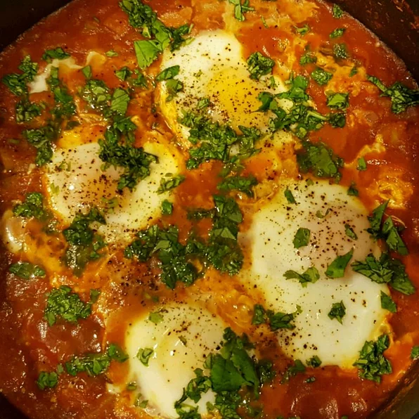

Shakshuka

A quick, flavorful, and underappreciated element of Middle Eastern
Cuisine.
Spices and veggies galore, this one wont break the calorie counter.
A great option for breakfast, lunch, or dinner.
Ingredients
- 2 teaspoons vegetable oil
- 2 cloves of garlic, minced
- 1 onion, chopped
- 1 zucchini, chopped
- 10 ounces of crushed tomatoes
- 4 dashes of hot pepper sauce
- 4 eggs
- 1 pinch of salt
Steps
-
Heat the vegetable oil in a skillet over medium heat. Stir in the garlic
and onion; cook and stir until the onion has softened and turned
translucent, about 5 minutes. Stir in zucchini; cook and stir for 5
minutes. Mix in the crushed tomatoes and hot pepper sauce. Cover and
simmer for 10 minutes.
-
Make 4 wells in the tomato mixture, and crack the eggs into each well.
Do not stir. Cover and cook until eggs are desired consistency, about
3 minutes for soft yolks. Carefully remove the eggs from the skillet
and serve with the tomato sauce.